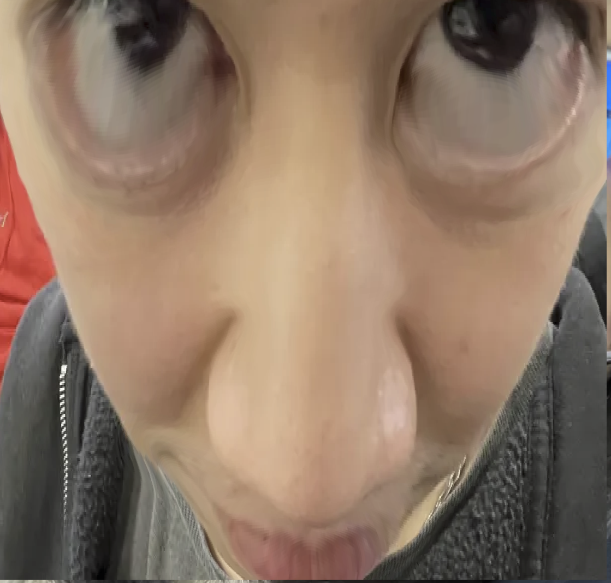

I had never been that interested in learning to code until I started this program, especially a couple weeks in when all of the basic syntax started to click and I was able to start making really simple outputs on my own, I was having a ton of fun. I think it was maybe our second online week that I started to have some difficulty, I started to get really overwhelmed with other assignments and with work and was struggling to keep up. I think thats when we started covering '&&' '==/===/!=' etc. and for the rest of the term I felt a little behind in my abilities.
I want to improve my knowledge of syntax and how
to properly use it. I think my logic is okay,
it's definitely not perfect, but my syntax for
sure needs more work. I am resorting to Mdn a
lot more this term, even for things that I do
know, if there is some part of it that doesn't
make complete sense to me then I will still look
through the Mdn and try a few different
applications.
Another thing I want to improve this term is my
notes. WOW my notes were bad last term and I
definitely shot myself in the foot come exam
time. Better documentation is gonna help me a
lot I think, as well as just making sure I have
a record of everything that I do know so far,
even if its really basic there is still proper
convention for how it can be used.
One thing I was looking into are gamified coding
platforms, I've seen them in the past for things
like python, but am wondering if there is maybe
something on Steam that could be an entertaining
way to practice js.
Overall, I really want to leave this program
with a foundational understanding of code. Not
only is it something I think would be very
useful in a design field but I also just find it
generally interesting.
